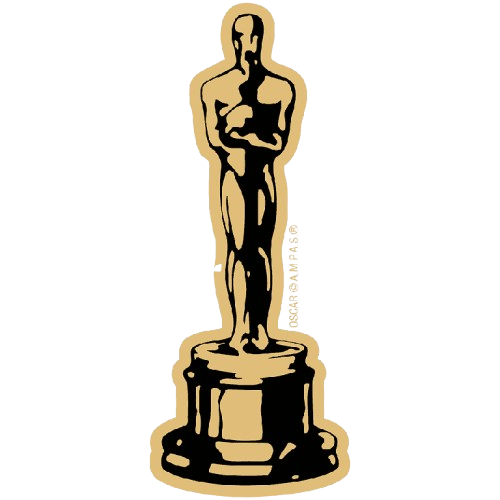

<!DOCTYPE html>
<html lang="pl"></html>
<head>
    <meta http-equiv="Content-type" content="text/html; charset=UTF-8"/>
    <meta name="Author" content="Przewodowski Łukasz" />
    <link rel="stylesheet" href="style.css" />
    <script src="timedate.js" type="text/javascript"></script>
    <script src="darkmode.js" type="text/javascript"></script>
    <title>Filmy Oscarowe</title>
</head>
<body>
    <header>
        <h1>Aktorzy</h1>
        <button id='theme-switch'>
            <svg xmlns="http://www.w3.org/2000/svg" height="24px" viewBox="0 -960 960 960" width="24px" fill="#5f6368"><path d="M480-120q-150 0-255-105T120-480q0-150 105-255t255-105q14 0 27.5 1t26.5 3q-41 29-65.5 75.5T444-660q0 90 63 153t153 63q55 0 101-24.5t75-65.5q2 13 3 26.5t1 27.5q0 150-105 255T480-120Z"/></svg>
            <svg xmlns="http://www.w3.org/2000/svg" height="24px" viewBox="0 -960 960 960" width="24px" fill="#5f6368"><path d="M480-280q-83 0-141.5-58.5T280-480q0-83 58.5-141.5T480-680q83 0 141.5 58.5T680-480q0 83-58.5 141.5T480-280ZM200-440H40v-80h160v80Zm720 0H760v-80h160v80ZM440-760v-160h80v160h-80Zm0 720v-160h80v160h-80ZM256-650l-101-97 57-59 96 100-52 56Zm492 496-97-101 53-55 101 97-57 59Zm-98-550 97-101 59 57-100 96-56-52ZM154-212l101-97 55 53-97 101-59-57Z"/></svg>
        </button>
        <nav>
            
            <a href="index.html">Strona Główna</a>
            <a href="filmy.html">Filmy</a>
            <a href="aktorzy.html">Aktorzy</a>
            <a href="rezyserowie.html">Reżyserowie</a>
            <a href="kontakt.html">Kontakt</a>
            <div class="time-box">
                <div id="zegarek"></div>
                <div id="data"></div>
            </div>
        </nav>
    </header>
    <div>
        <table>
            <tr>
                <th>Zdjęcie</th>
                <th>Aktor</th>
                <th>Za jaki film</th>
                <th>Rok przyznania nagrody</th>
                <th>Biografia</th>
            </tr>
            <tr>
                <td></td>
                <td><u>Cilian Murphy</u></td>
                <td>Oppenhaimer</td>
                <td><i>2024</i></td>
                <td>Cillian Murphy to urodzony 25 maja 1976 roku irlandzki aktor i muzyk. Uczęszczał do Presentation Brothers College w Cork, gdzie jednym z jego nauczycieli był pisarz William Wall. Później podjął studia prawnicze na University College Cork. Początkowo najbardziej interesowały go występy na scenie w charakterze muzyka.</td>
            </tr>
            <tr>
                <td></td>
                <td><u>Brendan Fraser</u></td>
                <td>Wieloryb</td>
                <td><i>2023</i></td>
                <td>Brendan Fraser, urodzony 3 grudnia 1968 roku, jest amerykańsko-kanadyjskim aktorem, znanym z ról w filmach takich jak "Mumia" i "George of the Jungle". Po problemach zdrowotnych i przerwie w karierze, powrócił z wielkim sukcesem, zdobywając Oscara za rolę w filmie "Wieloryb" w 2023 roku.</td>
            </tr>
            <tr>
                <td></td>
                <td><u>Will Smith</u></td>
                <td>King Richard: Zwycięska Rodzina</td>
                <td><i>2022</i></td>
                <td>Will Smith, urodzony 25 września 1968 roku, jest amerykańskim aktorem, raperem i producentem. Zyskał sławę dzięki serialowi "Bajer z Bel-Air", a później odniósł sukces w filmach takich jak "Dzień Niepodległości", "Faceci w Czerni" i "W pogoni za szczęściem". W 2022 roku zdobył Oscara za rolę w filmie "King Richard".</td>
            </tr>
            <tr>
                <td></td>
                <td><u>Anthony Hopkins</u></td>
                <td>Ojciec</td>
                <td><i>2021</i></td>
                <td>Anthony Hopkins, urodzony 31 grudnia 1937 roku, jest walijskim aktorem znanym z wybitnych ról w filmach takich jak "Milczenie owiec", gdzie wcielił się w Hannibala Lectera, oraz "Ojciec", za który otrzymał Oscara w 2021 roku. Jest jednym z najwybitniejszych aktorów swojego pokolenia, cenionym za swoje głębokie i złożone kreacje aktorskie.</td>
                
            </tr>
        </table>
    </div>

    <div class = "footer-container">
        <footer>
            <p>Przewodowski Łukasz 169354</p>
        </footer>
    </div>  
</body>